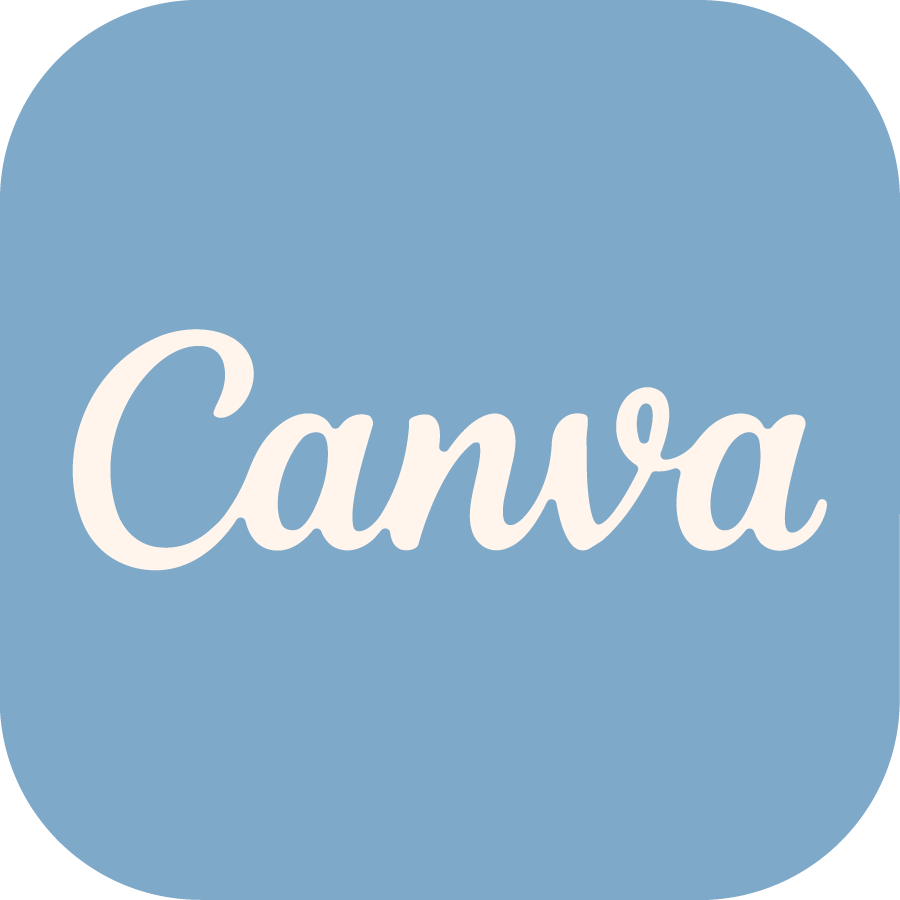
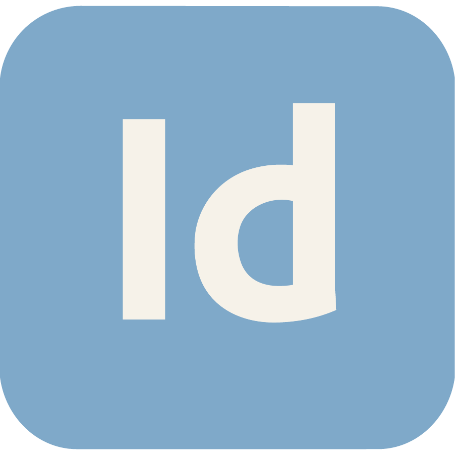
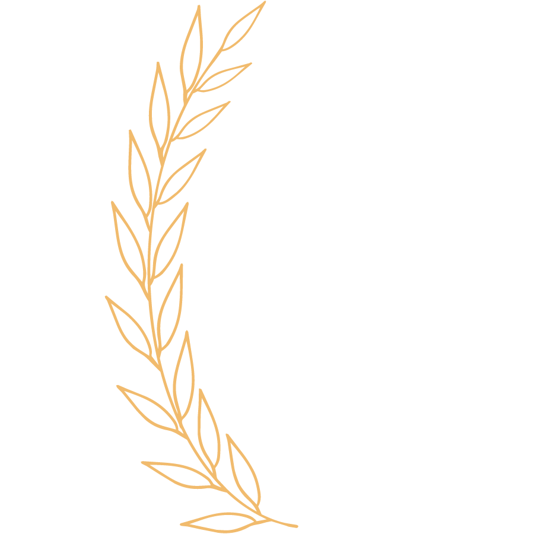
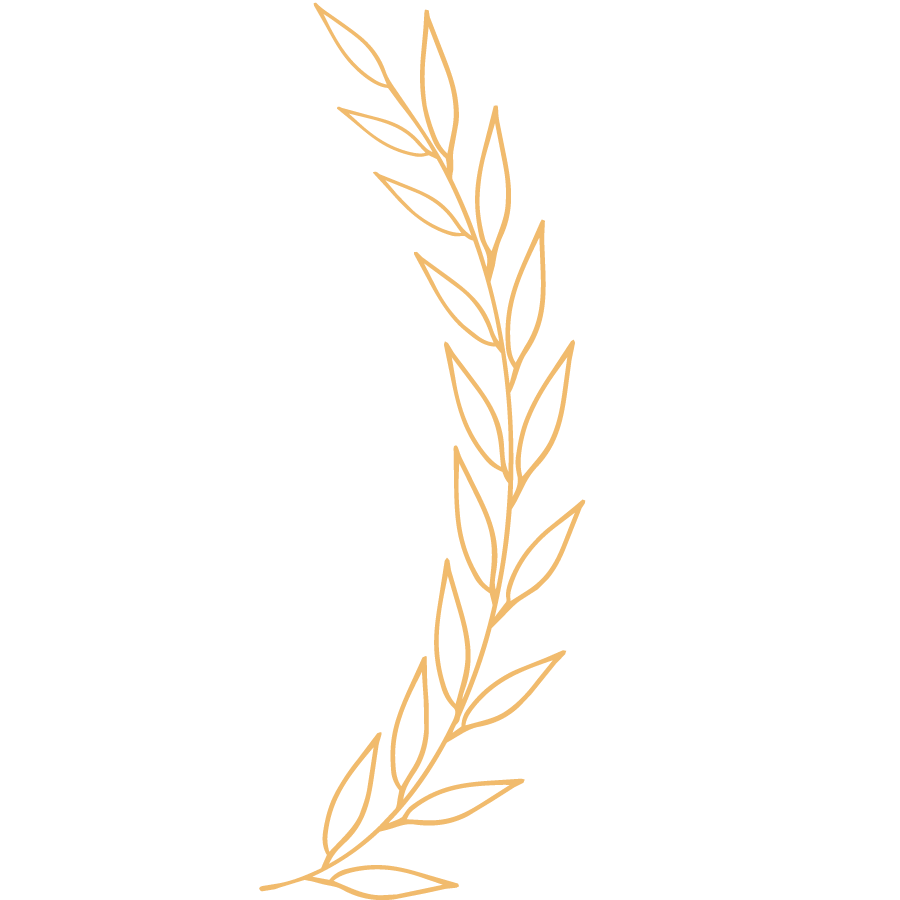

Illustrator
Photoshop

Canva

InDesign



Estudiante universitaria con interés en desarrollarme en el área administrativa y de atención al público. Me caracterizo por ser una persona responsable, organizada y comprometida, con facilidad para aprender nuevas tareas y trabajar en equipo. Busco incorporarme a una organización donde pueda aportar dedicación, buena predisposición y un trato cordial hacia las personas.
Colaboración de atención al público en negocio familiar. Actualmente busco mi primera experiencia laboral formal. A lo largo de mi formación académica desarrollé habilidades de organización, responsabilidad, planificación, cumplimiento de plazos y trabajo en equipo, que considero valiosas para desempeñarme en tareas administrativas.
Illustrator
Photoshop

Canva

InDesign